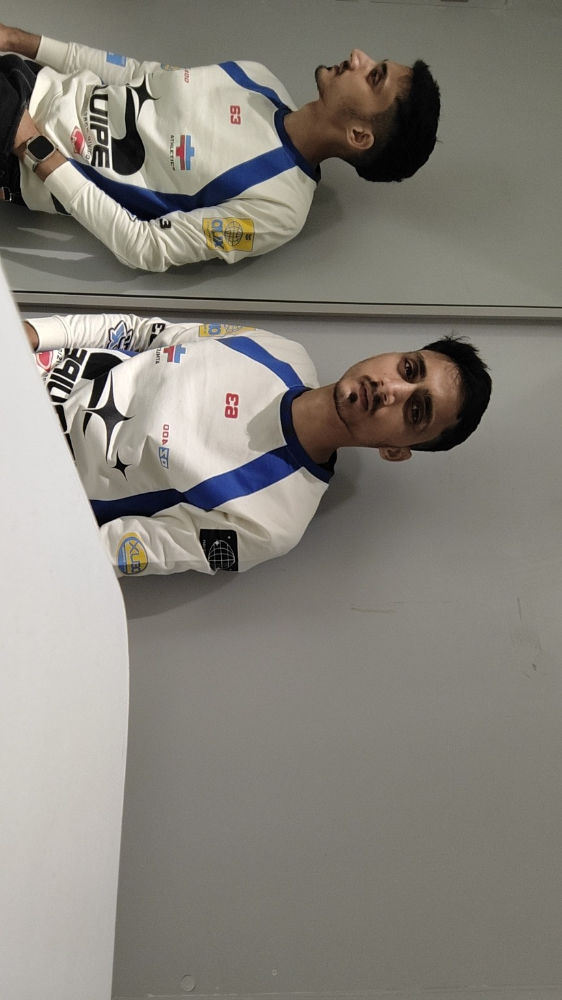

Bachelor of Pharmacy
Completed a four-year B.Pharm program in Himachal Pradesh, India.
B.PHARM GRADUATE · PHARMACEUTICAL PROFESSIONAL
Building my career at the intersection of pharmacy, quality, healthcare and continuous learning.
I am a B.Pharm graduate from Himachal Pradesh, India, interested in building a strong professional career in the pharmaceutical and healthcare sector.
My areas of interest include pharmaceutical quality, regulatory affairs, drug inspection and international pharmacy opportunities. I value practical learning, professional growth and work that contributes to better healthcare.
Completed a four-year B.Pharm program in Himachal Pradesh, India.
Professional exposure as a QC Officer in the pharmaceutical industry, including quality-focused work and documentation.
Continuing to explore regulatory, drug-inspection and global pharmacy career pathways.
Knowledge from pharmacy education combined with practical pharmaceutical-industry exposure.
Exploring how artificial intelligence can support pharmacy, healthcare and pharmaceutical workflows.
Interested in regulatory careers, drug inspection and the systems that protect medicine quality and safety.

Interested in connecting or discussing opportunities? Feel free to reach out.